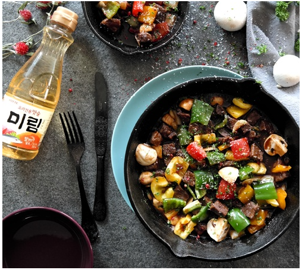

큐브 스테이크 만드는 법
- 각각의 재료를 준비합니다.
- 소고기를 1.5 X 1.5cm 크기로 자른 후, 소금과 후추, 맛술 미림으로 밑간해주세요.
- 파프리카, 청피망, 양파는 1.5 X 1.5cm 크기로 깍둑썰기, 마늘은 편 썰기, 양송이버섯은 4등분 하여 준비해주세요.
- 맛술 미림을 포함한 소스 재료를 넣고 섞어 소스를 만들어주세요.
- 달궈진 팬에 버터를 두르고 센 불에서 소고기와 마늘을 2분 정도 구워주세요.
- 소고기와 마늘을 굽던 팬에 만들어놓은 소스를 넣고 2분간 졸여주세요.
- 미리 손질해놓은 나머지 채소를 넣고 1분간 볶아주세요.
- 맛있게 익은 스테이크 위에 파슬리를 뿌려 마무리하면, 입에서 살살 녹는 큐브 스테이크 완성!